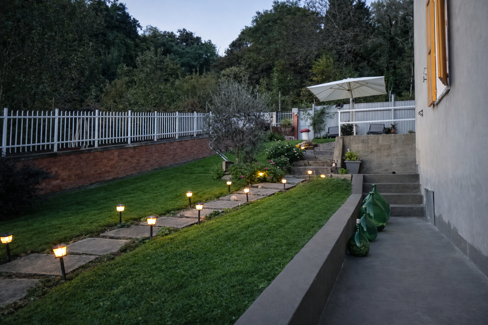
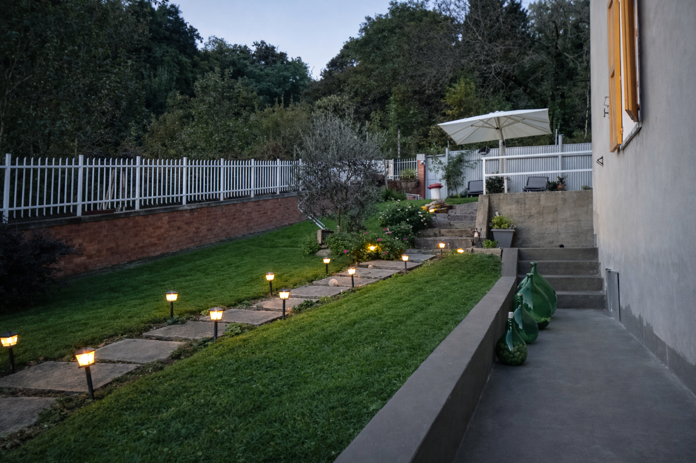

Le Camere
Ambienti luminosi, curati nei dettagli, pensati per il riposo vero. Ogni camera è progettata per farti sentire a tuo agio, senza eccessi, in armonia con la natura circostante.


Dove il tempo rallenta e la bellezza si rivela
Qui non si viene solo a dormire. Si viene per staccare, respirare, ritrovare silenzio, luce e semplicità. La Piazzetta Del Sole è pensata per chi cerca pace, autenticità e bellezza.
Ambienti luminosi, curati nei dettagli, pensati per il riposo vero. Ogni camera è progettata per farti sentire a tuo agio, senza eccessi, in armonia con la natura circostante.
Letti di qualità, biancheria in cotone e silenzio. Tutto quello che serve per un riposo rigenerante.
Svegliati con una vista sulle colline biellesi che ti accompagnerà per tutto il giorno.
Lontano dal traffico e dallo smog, qui respiri aria che profuma di natura.
Le mattine iniziano con calma. Una colazione semplice e genuina con prodotti locali, il silenzio del paese, la luce che entra dalle finestre. Qui non c'è fretta. C'è solo tempo per goderti ogni momento.

 

Pettinengo è chiamato il "balcone del Biellese" per la sua posizione panoramica a 700 metri di altitudine, con vedute spettacolari sulle Alpi. A soli 13 km da Biella, è il punto di partenza ideale per esplorare le cinque valli biellesi: Valle Oropa, Valle Elvo, Valle Cervo, Valle Mosso e Valle Sessera.


Oasi Zegna con il "Bosco del Sorriso", Parco Burcina, sentieri verso il Santuario di Oropa e la Grande Traversata del Biellese (GtB).
La vecchia tramvia Biella-Oropa è ora un percorso MTB spettacolare. Numerosi itinerari tra colline e borghi storici.
Ricetto di Candelo (borgo medievale fortificato), Santuario di Oropa (patrimonio UNESCO), Villa Piazzo e il centro storico di Biella.
Le attrazioni imperdibili del territorio, tutte facilmente raggiungibili dal B&B:
Il più importante santuario mariano delle Alpi, patrimonio UNESCO. Spettacolare complesso barocco a 1200m di quota, raggiungibile anche in funivia.
Borgo medievale fortificato del XIV secolo, uno dei meglio conservati d'Europa. A soli 8 km da Pettinengo, ospita eventi e mercatini tutto l'anno.
Area naturale protetta con il famoso "Bosco del Sorriso", percorso esperienziale tra faggi secolari. Ideale per famiglie e amanti della natura.
Villa ottocentesca a Pettinengo con parco all'inglese, sequoie giganti e l'Orto del Terzo Paradiso, opera di land art di Michelangelo Pistoletto.
Giardino botanico di 57 ettari famoso per la fioritura dei rododendri (maggio-giugno). Passeggiate panoramiche tra alberi monumentali.
Terzo lago del Piemonte, perfetto per sport acquatici, passeggiate lungolago e relax in spiaggia. A circa 30 minuti di auto.
La posizione strategica del B&B permette di raggiungere facilmente le principali stazioni sciistiche del Piemonte, dalle piste locali del Biellese ai comprensori internazionali del Monte Rosa.
La stazione sciistica più vicina, a soli 30 km (~40 min). Piste per famiglie, sci di fondo e ciaspolate nell'Oasi Zegna.
Comprensorio internazionale ai piedi del Monte Rosa, a circa 90 km (~1h15). Piste fino a 3.275m tra Piemonte e Valle d'Aosta.
Escursioni con le ciaspole nell'Oasi Zegna e nei sentieri innevati delle Alpi Biellesi. Panorami mozzafiato in totale silenzio.
Se cerchi un luogo dove rallentare davvero, La Piazzetta Del Sole ti aspetta. Contattaci per organizzare il tuo soggiorno perfetto.
Richiedi Disponibilità